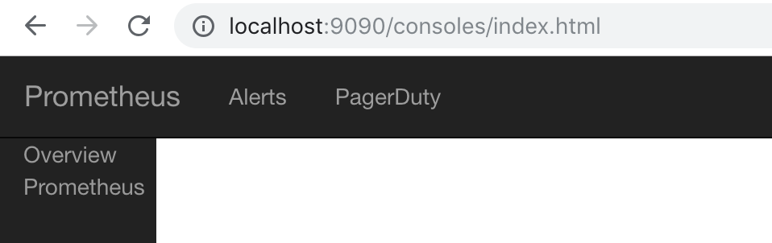
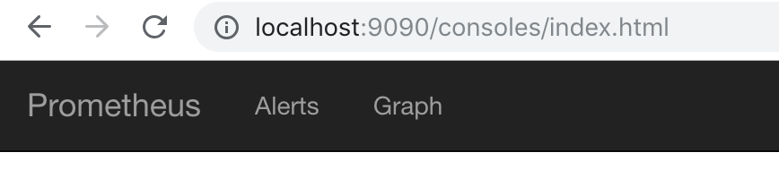
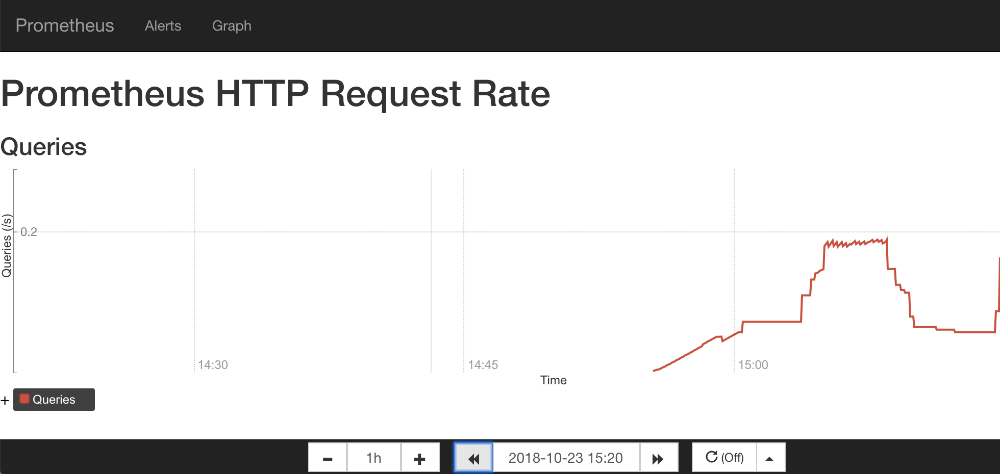

使用Console Template
在第1章以及第2章的内容中，读者已经对Prometheus已经有了一个相对完成的认识，并且我们已经学习了如何通过PromQL对时间序列数据进行查询和分析，并且通过Prometheus中的Graph面板查询数据形成图表。但是缺点也很明显，这些查询结果都是临时的，无法持久化的，更别说我们想实时关注某些特定监控指标的变化趋势。
为了简化这些问题Prometheus内置了一个简单的解决方案Console Template,它允许用户通过Go模板语言创建任意的控制台界面，并且通过Prometheus Server对外提供访问路径。
快速开始
首先我们先从一个小例子开始，创建我们的第一个Console Template页面。与Console Template有关的两个启动参数为--web.console.libraries和--web.console.templates,其分别指定页面组件以及页面的存储路径。默认情况下其分别指向Prometheus当前安装路径的console_libraries和consoles目录。
Prometheus在console_libraries目录中已经内置了一些基本的界面组件，用户可以直接使用。
在consoles目录下创建index.html文件后，刷新Prometheus界面可以看到在顶部菜单中多了一个Consoles菜单项，如下所示。该选项默认指向consoles/index.html文件：
当然，这个时候点击该菜单，我们会看到一个空白页。因为目前index.html文件中还未填充任何内容：
定义页面菜单
首先，我们先直接使用console_libraries中定义的head组件，并加入到index.html文件中：
{{template "head" .}}
此时，如果我们刷新浏览器可以看到以下内容：

head组件的定义，读者可以通过关键字define "head"在console_libraries目录中查找。默认其应该是定义在prom.lib文件中：
{{ define "head" }}
<html>
<head>
{{ template "prom_console_head" }}
</head>
<body>
{{ template "navbar" . }}
{{ end }}
如果需要定制化菜单的内容，那一样的读者只需要找到navbar组件的定义即可。当然用户也可以创建自己的组件。 例如，如果我们希望Console Template页面的菜单与Prometheus UI一致，只需要修改navbar组件的定义即可，找到menu.lib并修改navbar组件:
{{ define "navbar" }}
<nav class="navbar navbar-inverse navbar-static-top">
<div class="container-fluid">
<!-- Brand and toggle get grouped for better mobile display -->
<div class="navbar-header">
<button type="button" class="navbar-toggle collapsed" data-toggle="collapse" data-target="#bs-example-navbar-collapse-1">
<span class="sr-only">Toggle navigation</span>
<span class="icon-bar"></span>
<span class="icon-bar"></span>
<span class="icon-bar"></span>
</button>
<a class="navbar-brand" href="{{ pathPrefix }}/">Prometheus</a>
</div>
<div class="collapse navbar-collapse" id="bs-example-navbar-collapse-1">
<ul class="nav navbar-nav">
<li><a href="{{ pathPrefix }}/alerts">Alerts</a></li>
<li><a href="{{ pathPrefix }}/graph">Graph</a></li>
</div>
</ul>
</div>
</nav>
{{ end }}
如果不需要侧边菜单栏，直接在head组件中移除{{ template "menu" . }}部分即可，修改后刷新页面，如下所示：

无论是.lib文件还是.html文件均使用了Go Template的语言，感兴趣的读者可以自行在Go语言官网了解更多内容https://golang.org/pkg/text/template/
定义图表
在Console Template中我们可以在页面中使用内置的PromConsole.Graph()函数，该函数通过head加载相应的js源码，在该函数中，通过指定特定的DOM节点以及相应的PromQL表达式，即可在特定区域图形化显示相应的图表内容，如下所示：
<h1>Prometheus HTTP Request Rate</h1>
<h3>Queries</h3>
<div id="queryGraph"></div>
<script>
new PromConsole.Graph({
node: document.querySelector("#queryGraph"),
expr: "sum(rate(prometheus_http_request_duration_seconds_count{job='prometheus'}[5m]))",
name: "Queries",
yAxisFormatter: PromConsole.NumberFormatter.humanizeNoSmallPrefix,
yHoverFormatter: PromConsole.NumberFormatter.humanizeNoSmallPrefix,
yUnits: "/s",
yTitle: "Queries"
})
</script>
这里创建了一个id为queryGraph的div节点，通过在页面中使用PromConsole.Graph函数，我们可以绘制出表达式sum(rate(prometheus_http_request_duration_seconds_count{job='prometheus'}[5m]))的可视化图表如下所示：

除了最基本的node以及expr参数以外，该函数还支持的完整参数如下：
| 参数名称 | 作用 |
|---|---|
| expr | Required. Expression to graph. Can be a list. |
| node | Required. DOM node to render into. |
| duration | Optional. Duration of the graph. Defaults to 1 hour. |
| endTime | Optional. Unixtime the graph ends at. Defaults to now. |
| width | Optional. Width of the graph, excluding titles. Defaults to auto-detection. |
| height | Optional. Height of the graph, excluding titles and legends. Defaults to 200 pixels. |
| min | Optional. Minimum x-axis value. Defaults to lowest data value. |
| max | Optional. Maximum y-axis value. Defaults to highest data value. |
| renderer | Optional. Type of graph. Options are line and area (stacked graph). Defaults to line. |
| name | Optional. Title of plots in legend and hover detail. If passed a string, [[ label ]] will be substituted with the label value. If passed a function, it will be passed a map of labels and should return the name as a string. Can be a list. |
| xTitle | Optional. Title of the x-axis. Defaults to Time. |
| yUnits | Optional. Units of the y-axis. Defaults to empty. |
| yTitle | Optional. Title of the y-axis. Defaults to empty. |
| yAxisFormatter | Optional. Number formatter for the y-axis. Defaults to PromConsole.NumberFormatter.humanize. |
| yHoverFormatter | Optional. Number formatter for the hover detail. Defaults to PromConsole.NumberFormatter.humanizeExact. |
| colorScheme | Optional. Color scheme to be used by the plots. Can be either a list of hex color codes or one of the color scheme names supported by Rickshaw. Defaults to 'colorwheel'. |
需要注意的是，如果参数expr和name均是list类型，其必须是一一对应的。
除了直接使用PromConsole.Graph函数显示可视化图表以外，在Console Template中还可以使用模板组件prom_query_drilldown定义一个连接直接跳转到Graph页面，并显示相应表达式的查询结果， 如下所示：
<h3>Links</h3>
{{ template "prom_query_drilldown" (args "prometheus_http_response_size_bytes_bucket") }}
除了以上部分以外，我们也可以和原生Prometheus UI一样定义一个时间轴控制器，方便用户按需查询数据：

加入这个时间轴控制器的方式也很简单，直接引用以下模板即可：
{{ template "prom_graph_timecontrol" . }}